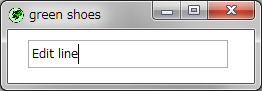

The Green Shoes Manual 1.0.322
EditLine
エディットライン（Edit line）は細長い、小さなテキストを入力する箱です。 エディットボックスはマルチラインですが、エディットラインは１行です。 これはエディットラインです。ちなみに水平です。 
スタイルが設定されていないエディットラインは200ピクセルの幅と28ピクセルの高さです。 これはおおよそです。プラットフォームによって高さは様々です。
Shoes.app do
stack do
edit_line
edit_line width: 400
end
end
:widthと:heightの両方のスタイルを設定することによりサイズを変更することができます。 しかしながら、高さはフォントに合わせて調整されるため、一般的には:widthだけの スタイルを設定します。（そして、現在のバージョンのGreen Shoesでは、エディットラインと エディットボックスフォントはどうやっても変更できません。）
エディットラインにブロックが与えられたら、changeイベントを受けとります。 changeブロックを利用した例についてはEditBoxのページを確認してください。 実際には、そのエディットボックスはエディットラインとすべて同じメソッドを持ちます。 すべての要素が応答できる、Commonメソッドの一覧も見てください。
change() { |self| ... } » self
エディットラインに文字が追加されたり取り除かれるたびに、chenageブロックが呼ばれます。 ブロックには変更されたエディットラインのオブジェクトであるselfが与えられます。
focus() » self
エディットラインにフォーカスを移動します。そのエディットラインはハイライトされ、 ユーザはエディットラインにタイプできます。
text() » self
箱にタイプされた文字を文字列として返します。
a stringの文字をエディットボックスに代入します。
Next: Image